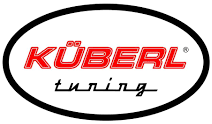
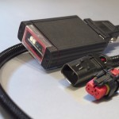
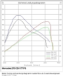

 küberl diesel tuning
Dodáváme a montujeme kvalitní moduly rakouské firmy Küberl pro zvýšení výkonu moderních elektronicky řízených turbodieselových motorů.
Nejvyšší
prioritou vývoje byl technicky bezpečné
zvýšení výkonu při
zachování typických
vlastností turbodieselových motorů -
úspornost, stabilita a nedotčená
každodenní použitelnost. Důležitá byla při
vývoji také jednoduchá
montáž a demontáž.
Původní řídicí jednotka motoru
vašeho vozidla zůstává nedotčena. To
je rozhodující výhoda proti
většině konkurentů.
Všechny systémy detekce chyb jsou
zachovány. Není možné naladit motor
přes maximální hodnotu tolerance
výrobce, v opačném případě ECU motor
na chvíli zastaví.
Další velkou výhodou této
produktové řady je také skutečnost, že po
připojení diagnostického testeru v servisu
zvýšení výkonu
zůstává nezjištěno a také
nemůže dojít k přepsání
pomocí diagnostického testeru, jako je tomu v
případě chiptuningu provedeného přímo
v řídicí jednotce.
Návrat k původnímu nastavení
výrobce je možný kdykoli a je velmi
jednoduše proveditelný.
Modul upravuje hodnoty v celém operačním poli
motoru, a to na základě jedné nebo
více veličin. Dokonalá souhra všech
upravovaných veličin umožní tomuto modulu
bezproblémové
zvýšení výkonu motoru.
Spotřeba paliva je zcela v rukou, tedy spíše v
noze řidiče. Tento způsob úpravy umožňuje
sportovnější chování motoru
a zároveň umožnuje snížení spotřeby
paliva právě možností
využívání
vyššího výkonu.
 
Upozornění:
Instalace modulu znamená změnu parametrů
výkonu motoru a může vést ke ztrátě
povolení k provozu na veřejných
komunikacích a následně ke ztrátě
pojištění nebo tovární
záruky.